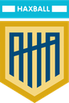
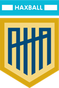
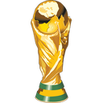
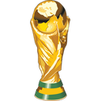

AHA BIG - Asociación de HaxBall Argentina Big
🏆 Temporada 24 / 📢│t24-cdm-anuncios

 COPA DEL MUNDO AUSTRIA 2022 - PRESENTACIÓN
Buenos días @everyone. La Asociación de Haxball Argentino presenta con orgullo una nueva edición de la Copa del Mundo, la primera competencia oficial del año, y para muchos, la más prestigiosa.
De esta manera, también se estará dando comienzo a la 24ª temporada de AHA.
Cumpliendo con la tradición, este año el torneo se llevará a cabo en Austria, último país en conquistar la copa gracias a Pearl Jam.
COPA DEL MUNDO AUSTRIA 2022 - PRESENTACIÓN
Buenos días @everyone. La Asociación de Haxball Argentino presenta con orgullo una nueva edición de la Copa del Mundo, la primera competencia oficial del año, y para muchos, la más prestigiosa.
De esta manera, también se estará dando comienzo a la 24ª temporada de AHA.
Cumpliendo con la tradición, este año el torneo se llevará a cabo en Austria, último país en conquistar la copa gracias a Pearl Jam.
 ¿Quiénes participarán?
• Participarán no solo equipos afiliados a la liga, sino también equipos nuevos con la posibilidad de ingresar a AHA.
• Los equipos nuevos con buen desempeño a lo largo del torneo tendrán la chance de jugar en la
¿Quiénes participarán?
• Participarán no solo equipos afiliados a la liga, sino también equipos nuevos con la posibilidad de ingresar a AHA.
• Los equipos nuevos con buen desempeño a lo largo del torneo tendrán la chance de jugar en la  Tercera División.
• Dependiendo de las desafiliaciones, equipos de divisiones inferiores (B y C) también tendrán la posibilidad de pelear por un ascenso.
Formato del torneo
• 2 etapas, la primera siendo una fase de grupos, con 6 grupos de 4 equipos cada uno.
• Los 2 mejores de cada grupo y los 4 mejores terceros pasarán a una fase final eliminatoria, partiendo de la ronda de octavos de final.
• La conformación de los grupos se obtendrá de un sorteo, tomando como cabezas de serie a los equipos con mejor rendimiento a lo largo de las competencias disputadas en la temporada anterior.
Tercera División.
• Dependiendo de las desafiliaciones, equipos de divisiones inferiores (B y C) también tendrán la posibilidad de pelear por un ascenso.
Formato del torneo
• 2 etapas, la primera siendo una fase de grupos, con 6 grupos de 4 equipos cada uno.
• Los 2 mejores de cada grupo y los 4 mejores terceros pasarán a una fase final eliminatoria, partiendo de la ronda de octavos de final.
• La conformación de los grupos se obtendrá de un sorteo, tomando como cabezas de serie a los equipos con mejor rendimiento a lo largo de las competencias disputadas en la temporada anterior.
 Sorteo
Toda la explicación la tienen en el canal próximo a este (#🎲│t24-cdm-sorteo). El resultado final fue el siguiente:
Grupo A
[
Sorteo
Toda la explicación la tienen en el canal próximo a este (#🎲│t24-cdm-sorteo). El resultado final fue el siguiente:
Grupo A
[ ] Juego Bonito Argentina
[] Vikings Big
[
] Juego Bonito Argentina
[] Vikings Big
[ ] Samurai
[
] Samurai
[ ] Deportivo Mac Allister
Grupo B
[
] Deportivo Mac Allister
Grupo B
[ ] Vélez
[
] Vélez
[ ] SanBri Club
[
] SanBri Club
[


 ] La R Vivimo
[
] La R Vivimo
[ ] Burkina Faso HC
Grupo C
[
] Burkina Faso HC
Grupo C
[ ] Ricardo Fort
[
] Ricardo Fort
[ ] AC Milanesa
[
] AC Milanesa
[ ] MSBY Black Jackals
[
] MSBY Black Jackals
[ ] All*Stars
Grupo D
[
] All*Stars
Grupo D
[ ] Tigres del Sur
[] xGodesk
[] Leeds United
[
] Tigres del Sur
[] xGodesk
[] Leeds United
[ ] Massachusetts Gang
Grupo E
[
] Massachusetts Gang
Grupo E
[ ] Históricos
[
] Históricos
[ ] Titanes del Haxball
[
] Titanes del Haxball
[ ] Toco y Paso
[
] Toco y Paso
[ ] KF Lepenci Kačanik
Grupo F
[
] KF Lepenci Kačanik
Grupo F
[ ] La Tenés Adentro
[
] La Tenés Adentro
[ ] Sokker
[
] Sokker
[ ] Big Black Cock
[
] Big Black Cock
[ ] Yū Yū Hakusho
] Yū Yū Hakusho
 Cronograma
Cronograma
Mié. 6 de abril: Fase de grupos - Fecha 1 [Grupos ABC]
Jue. 7 de abril: Fase de grupos - Fecha 1 [Grupos DEF]
Lun. 11 de abril: Fase de grupos - Fecha 2 [Grupos ABC]
Mar. 12 de abril: Fase de grupos - Fecha 2 [Grupos DEF]
Mié. 13 de abril: Fase de grupos - Fecha 3 [Grupos ABC]
Jue. 14 de abril: Fase de grupos - Fecha 3 [Grupos DEF]
Lun. 18 de abril: Fase final - Octavos de final [Partidos 1-4]
Mar. 19 de abril: Fase final - Octavos de final [Partidos 5-8]
Mié. 20 de abril: Fase final - Cuartos de final [Partidos 1-2]
Jue. 21 de abril: Fase final - Cuartos de final [Partidos 3-4]
Lun. 25 de abril: Fase final - Semifinales
Mié. 27 de abril: Fase final - Final y Tercer puesto
 Fixture y horarios
Próximamente encontrarán publicados en #📋│t24-cdm-horarios los fixtures de cada grupo junto con los horarios de la primera fecha.
Esperamos que puedan disfrutar participando de este torneo tanto como nosotros organizándolo, ante cualquier duda/sugerencia pueden contactarse conmigo u otro miembro del Staff.
¡Mucha suerte a todos! Staff de AHA  5 3
Fixture y horarios
Próximamente encontrarán publicados en #📋│t24-cdm-horarios los fixtures de cada grupo junto con los horarios de la primera fecha.
Esperamos que puedan disfrutar participando de este torneo tanto como nosotros organizándolo, ante cualquier duda/sugerencia pueden contactarse conmigo u otro miembro del Staff.
¡Mucha suerte a todos! Staff de AHA  5 3")
 Tigres del Sur por coronarse los nuevos campeones de la  Copa del Mundo Austria 2022, así como agradecer a todos los que participaron por habernos ofrecido un gran espectáculo en estas semanas de competencia.
Por suerte, todo se pudo llevar a cabo de la mejor manera y se incrementó notablemente el nivel de actividad para esta modalidad. Nos reencontramos con viejos conocidos y se formaron muchos equipos con caras nuevas, algunos ya preparados para dar pelea en lo más alto.
En los próximos días van a disponer de las premiaciones y más.
Tigres del Sur por coronarse los nuevos campeones de la  Copa del Mundo Austria 2022, así como agradecer a todos los que participaron por habernos ofrecido un gran espectáculo en estas semanas de competencia.
Por suerte, todo se pudo llevar a cabo de la mejor manera y se incrementó notablemente el nivel de actividad para esta modalidad. Nos reencontramos con viejos conocidos y se formaron muchos equipos con caras nuevas, algunos ya preparados para dar pelea en lo más alto.
En los próximos días van a disponer de las premiaciones y más.